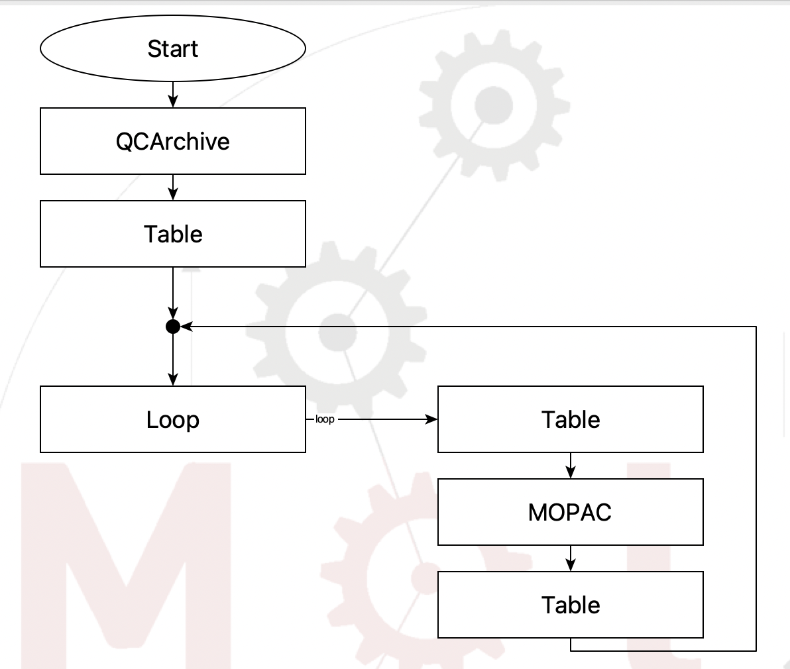
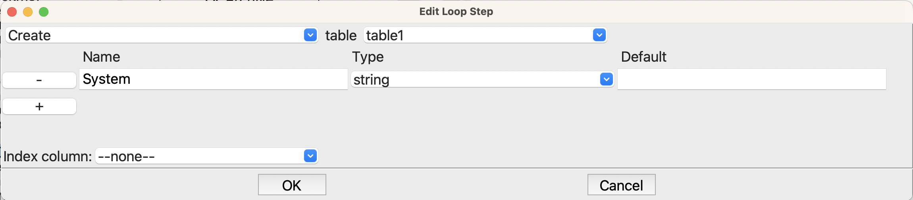
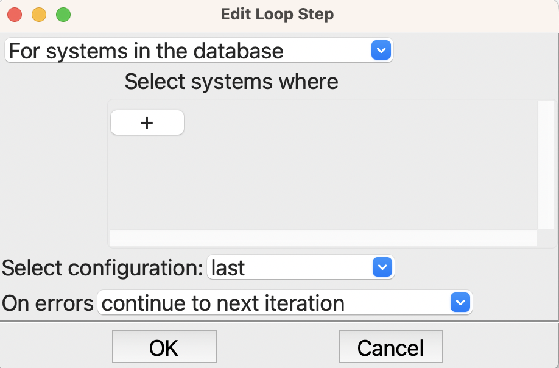
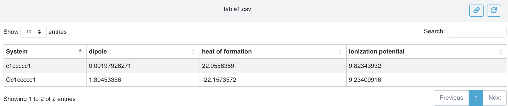
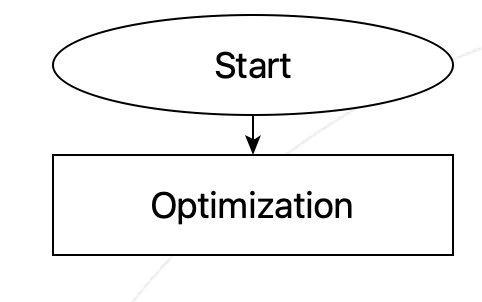
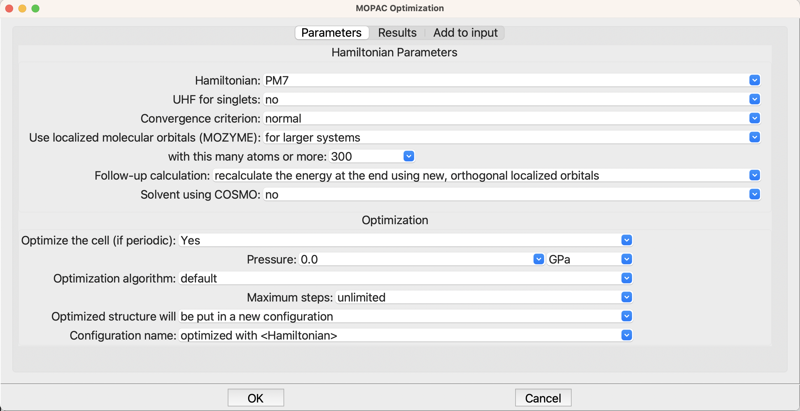
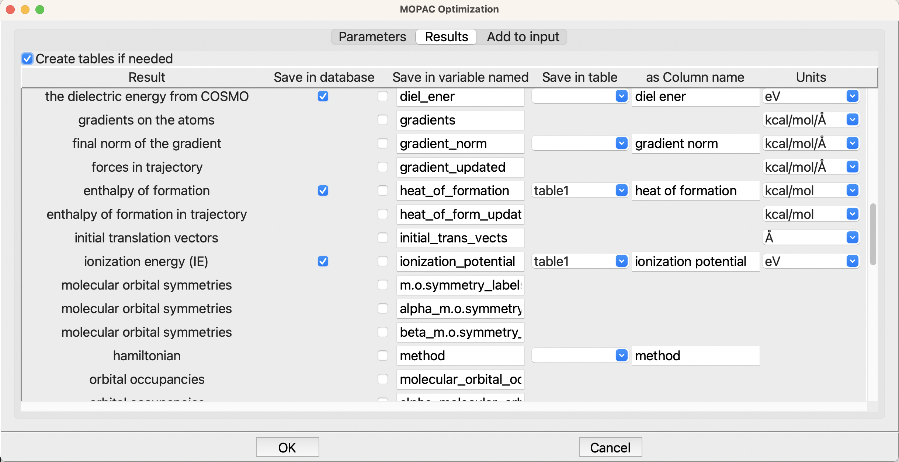
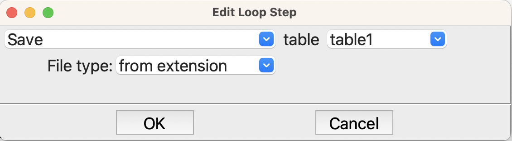

Using a Dataset#
This section covers how to get a dataset from QCArchive, loop over the structures, and optimize each with PM7 in MOPAC. We could of course write the structures out to any of a variety of file formats, such as MOL files, if we wanted to export the structures from QCArchive.
- The steps are straightforward
Get structure from the dataset in QCArchive
Loop over the structures which are now in the SEAMM database
Optimize each structure using MOPAC
Capture some key information in a table for later analysis
The is the example from the Getting Started guide, but here it will be explained in a bit more detail.
Here is the flowchart
{kind=link}

Flowchart to read a dataset from QCArchive#
Before going into the loop, we need to create a table to capture the results. This is the purpose of the first Table step
{kind=link}

Options for creating the table for results.#
We will want the name of the molecule, so this step creates that column in the table. Later we will see how to easily add columns of properties.
Now we are ready for the loop itself, which is given by the Join step followed by the Loop step, which is set up like this
{kind=link}

Setting up the loop step#
We want to loop over the systems in the database and take the last configuration for each system. There is actually only one configuration for each because when we read the structures from QCArchive we put each in a different system, each with just the new configuration. Note that we could also have specified the name of the configurations or specified them in other ways, and also we could have filtered them to run just some. But for this example, we want all of the structures, and the last – and only – configuration is the one we want.
The first Table step in the loop puts the name of the system into the results table
{kind=link}

The setup for the table step in the loop#
We want to append a new row for each structure, and put the name of the structure into the table. $_system_db.system.name is the ame of the structure, but let’s explain what this odd expression is doing.
First, the dollar sign ($) at the beginning tells SEAMM that this is a variable or expression that needs to be evaluated, and the resulting value used. _system_db is a global variable referencing the internal SEAMM database, which can contain many different systems. The attribute .system, i.e. _system_db.system is always the current system, i.e. the one that SEAMM is working on by default. Finally the attribute .name is the name of the system, which is wht we wanted.
The next step is MOPAC, which is the program that we are using to optimize the structure. MOPAC has a sub-flowchart, which in this case is very simple
{kind=link}

Sub-flowchart for MOPAC optimization.#
The optimization setup in MOPAC is completely normal, indeed the defaults are fine, so no changes are needed.
{kind=link}

Setup for the optimization in MOPAC#
However, the second tab, Results, is more interesting
{kind=link}

The Results tab for optimization#
Here we are asking for the heat of formation and ionization energy to be stored in the table table1, which is the table that we created at the beginnning of the flowchart. Further up in the list of results, I also added the dipole moment, but it has scrolled off the screen.
Now that we have the results in the table, we need to save it to disk. By default tables are held in memory and are only written out when requested. In this flowchart we write the table every pass through the loop so we can see the results as the calculation runs, and also so if the job or the machine crashes we have the latest results. The Table step at the end of the loop does this
{kind=link}

Saving the table to disk.#
That explains the flowchart – now to run it and see the results. Since we have only a couple structures and MOPAC is very fast, it takes only a second or two to do the work. Apart from the text in Job.out the output of interest is table.csv which we can view in the browser.
The table of results table1.png#
How do the results look? If we head to the NIST Webbook for benzene and phenol we find the experimental enthalpies of formation, ionization energies, and dipole moments to be
Molecule |
ΔfH°(gas) |
Calculated |
IE |
Calc |
Dipole |
Calc |
|---|---|---|---|---|---|---|
. |
(kcal/mol) |
PM7 |
(eV) |
PM7 |
(debye) |
PM7 |
benzene |
19.8 ± 0.2 |
22.9 |
9.24 |
9.8 |
0.0 |
0.002 |
phenol |
-23.03 ± 0.14 |
-22.2 |
8.49 |
9.2 |
1.224 |
1.305 |
The agreement with experiment is quite good!